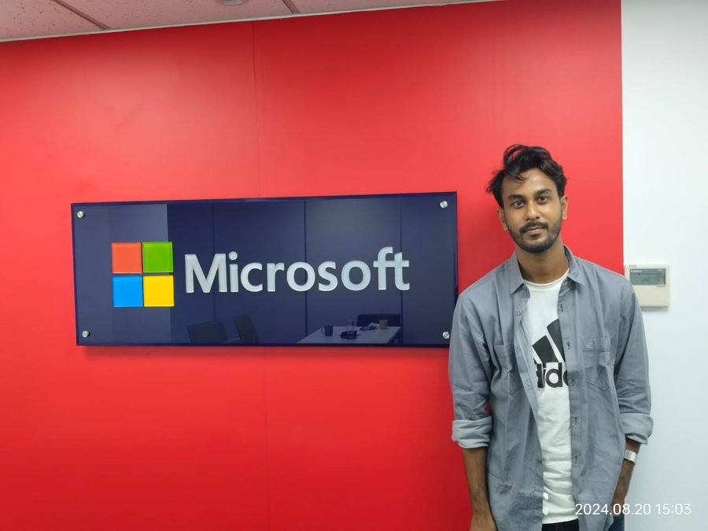
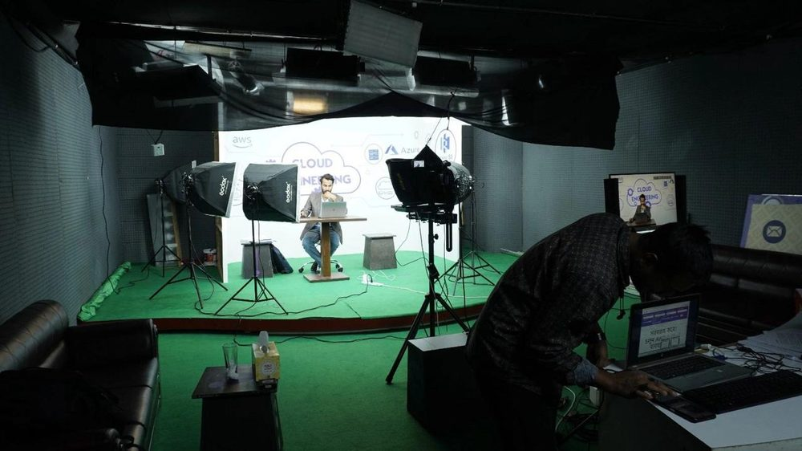

|
Cloud & DevOps Engineer focused on production Azure infrastructure, Kubernetes, GitOps and AIOps. Dual Microsoft certified. 30+ public projects. Teaching Cloud & DevOps in Bengali on YouTube.

About
// backgroundCloud & DevOps Engineer with dual Microsoft certification (AZ-104, AZ-305) and hands-on experience building production-grade infrastructure on Azure. I specialize in Kubernetes, GitOps CI/CD, Terraform IaC, and applying AI to operations (self-healing systems, predictive scaling, alert correlation).
Delivered 30+ real-world projects publicly. Active educator teaching Cloud & DevOps concepts in Bengali on YouTube (1K+ subscribers). Published researcher with papers in IEEE, ACM and IGI Global. Currently seeking Junior / Associate Cloud or DevOps Engineer roles.
Experience
// professional- Deployed Azure infrastructure (VMs, VNets, NSGs, Storage) and managed RBAC via Microsoft Entra ID.
- Provisioned Infrastructure as Code using Terraform across multiple environments; automated VM lifecycle with scripts.
- Containerised applications with Docker & Kubernetes (Minikube); built CI/CD pipelines with Jenkins, Argo CD & GitHub Actions.
- Automated configuration management and application deployment using Ansible.
Skills
// technical stackInterests
// what I'm exploringFlagship Projects
// highest impact buildsAI-Powered Kubernetes Self-Healing System
Autonomous healing system that detects pod failures via Prometheus metrics and uses Azure OpenAI GPT-4 to decide and execute recovery actions. Deployed on K3s / AKS.
Production CI/CD with Jenkins + Argo CD
Full GitOps pipeline with blue-green deployments. Reduced deployment time from 2 hours to under 10 minutes while improving release reliability and rollback speed.
ZeroTouch Azure Infrastructure
Single git push provisions complete Azure environments (VMs, VNets, AKS, RBAC) using Terraform + Ansible + GitHub Actions. Fully automated, multi-environment ready.
Teaching & Content
// education & communityCreating practical Cloud & DevOps tutorials in Bengali to help students and early-career engineers in Bangladesh and beyond. Covering Azure, Kubernetes, CI/CD, Terraform, Docker and real project walkthroughs.
- Azure fundamentals & architecture
- Kubernetes & Docker hands-on
- CI/CD with Jenkins & GitHub Actions
- Terraform Infrastructure as Code
- Real project end-to-end builds
Field Notes
// on set, on site